LINHAGENS SAGRADAS
~ as raças que moldam o destino do Olimpo ~
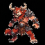
🐺 THERIONITAS
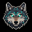
🌑 ESSÊNCIA BESTIAL
• Visão no escuro 18m
• Vantagem em Percepção (olfato/audição)
• Resistência a um tipo: ácido, frio, fogo, elétrico ou veneno.
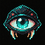
🧠 INSTINTO PREDADOR
Proficiência em: Atletismo, Intimidação ou Sobrevivência.
🧬 FORMA MONSTRUOSA (Escolha 1)
🐂 CHIFRES (MINOTAURO)
Você desenvolve chifres letais, que podem ser utilizados como arma natural.
Ataque Natural. Seus chifres são considerados uma arma natural que causa 1d8 + seu modificador de Força de dano perfurante em caso de acerto.
Se você se mover pelo menos 6 metros em linha reta imediatamente antes de atingir uma criatura com este ataque no mesmo turno, o ataque causa +1d6 de dano perfurante adicional, e o alvo deve realizar um teste de resistência de Força.
CD do Teste. 8 + seu bônus de proficiência + seu modificador de conjuração.
Falha. A criatura fica Caída.
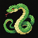
🐍 CORPO SERPENTINO (HIDRA)
Sua fisiologia se adapta a toxinas e regenera agressivamente.
Você possui resistência a dano de veneno e vantagem em testes de resistência contra a condição Envenenado.
Além disso, uma vez por turno, quando você acerta um ataque físico, o alvo sofre +1d6 de dano de veneno adicional. Esse dano aumenta conforme seu nível, seguindo a progressão de truques.
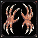
🦁 GARRAS PREDATÓRIAS (QUIMERA)
Suas mãos se transformam em garras predatórias.
Ataque Natural. Suas garras são consideradas uma arma natural que causa 1d6 + seu modificador de Força ou Destreza de dano cortante.
Se você acertar uma criatura com dois ataques no mesmo turno, o segundo acerto causa +1d6 de dano cortante adicional, escalando conforme um truque.
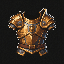
🐗 COURAÇA NATURAL
Sua pele se torna espessa e resistente como a de uma criatura selvagem.
Enquanto não estiver vestindo armadura pesada, você recebe +1 na Classe de Armadura.
Além disso, você possui resistência a dano contundente, perfurante e cortante.
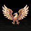
🦅 ASAS DE GRIFO
Você desenvolve asas capazes de sustentar voo.
Você adquire um deslocamento de voo de 9 metros.
Você não pode utilizar esse deslocamento enquanto estiver vestindo armadura pesada.
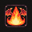
🔥 SOPRO BESTIAL (QUIMERA)
Você pode expelir energia destrutiva em um padrão cônico.
Ação. Você exala um sopro em um cone de 4,5 metros.
Criaturas na área devem realizar um teste de resistência de Destreza.
CD do Teste. 8 + seu bônus de proficiência + seu modificador de Constituição.
Dano. 2d6 de dano ácido.
Sucesso. A criatura sofre metade do dano.
O alcance do cone aumenta em 1,5 metro conforme escala de truques, e o dano também aumenta conforme essa progressão.
Usos. Você pode usar esta habilidade um número de vezes igual ao seu bônus de proficiência, recuperando todos os usos após um descanso longo.
🩸 REGENERAÇÃO DE HIDRA
Sua vitalidade é extremamente resiliente.
No início de cada um de seus turnos, você recupera uma quantidade de pontos de vida igual ao seu bônus de proficiência.
Se você tiver sofrido dano de fogo desde o seu último turno, esta habilidade não funciona naquele turno.
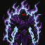
🔥 TARTARIANOS
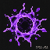
🌑 ESSÊNCIA DO ABISMO
• Tipo: Humanoide.
• Resistências: Você possui resistência a dano necrótico e psíquico.
• Visão das Profundezas (18m)
• Deslocamento: Seu deslocamento base de caminhada é de 9 metros.
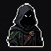
🧠 NATUREZA SOMBRIA
• Proficiência em: Intimidação ou Religião.
• Mente Inabalável: Você possui vantagem em testes de resistência contra a condição Amedrontado.
• Aprimoramento: Você ganha proficiência em um atributo adicional à sua escolha.
👁 PODERES INATOS
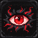
👁 VISÃO DAS PROFUNDEZAS
Quando você usa a Visão das Profundezas, os seus olhos mudam instantaneamente, brilhando com um tom Amarelo-radiante ou Vermelho abissal, como o sobre a lava de um vulcão onde a luz representa morte. A criatura afetada sente o ar ao seu redor ficar subitamente denso, pesado e quente, como se estivesse sobre a superficie de vulcão. Uma ilusão visual de lava reluzente e correntes escuras distorce a visão dela, fazendo com que errar os ataques (a desvantagem) pareça uma consequência de tentar lutar dentro de um vulcão ativo. Para os outros que estão olhando, o alvo parece exausto e curvado, com os movimentos visivelmente lentos e pesados (o deslocamento reduzido), como se estivesse carregando o peso de um vulcão inteiro nas costas.
Ação. Uma criatura deve realizar um teste de resistência de Sabedoria.
CD do Teste. 8 + seu bônus de proficiência + seu modificador de Sabedoria.
Falha. A criatura sofre desvantagem em jogadas de ataque por 2 turnos. Além disso, enquanto durar o efeito, ela fica sob uma pressão esmagadora e seu deslocamento é reduzido pela metade.
Usos. Igual ao seu bônus de proficiência, recuperados após um descanso longo.
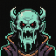
👁🗨 PRESENÇA OPRESSIVA
Sua mera existência impõe terror aos inimigos.
Ação. Criaturas hostis à sua escolha em um raio de 4,5 metros devem realizar um teste de resistência de Sabedoria.
CD do Teste. 8 + seu bônus de proficiência + seu modificador de conjuração.
Falha. A criatura fica Amedrontada por 2 turnos.
Usos. Igual ao seu bônus de proficiência, recuperados após um descanso longo.
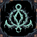
🕳 MARCA DO ABISMO
Você marca seus inimigos com energia do Tártaro.
Ao acertar um ataque físico, você pode fazer com que o alvo sofra dano necrótico adicional igual a metade do seu bônus de proficiência (arredondado para cima).
Este efeito permanece ativo por 5 turnos.
Usos. Igual ao seu bônus de proficiência.
🔥 VARIANTES DO TÁRTARO (Escolha 1)
⛓ PRISÃO ABSOLUTA
Você aprisiona seus inimigos com correntes abissais.
Quando você acerta uma criatura com um ataque, ela deve realizar um teste de resistência de Força.
CD do Teste. 8 + seu bônus de proficiência + seu modificador de conjuração.
Falha. A criatura fica Contida por 2 turnos.
Usos. Igual ao seu bônus de proficiência.
🌪 COLAPSO MENTAL
Você fragmenta a mente do alvo com energia psíquica.
Quando você acerta uma criatura com um ataque, ela deve realizar um teste de resistência de Sabedoria.
CD do Teste. 8 + seu bônus de proficiência + seu modificador de conjuração.
Falha. A criatura sofre: Desvantagem em jogadas de ataque. Não pode usar reações.
Duração: 2 turnos.
Usos. Igual ao seu bônus de proficiência.
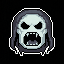
☠ SUSSURRO DO ABISMO (Subst. Marca)
Você deteriora a capacidade de combate do inimigo.
Quando você acerta uma criatura com um ataque, ela deve realizar um teste de resistência de Sabedoria.
CD do Teste. 8 + seu bônus de proficiência + seu modificador de conjuração.
No final de cada turno da criatura, ela repete o teste.
Falha. A criatura sofre uma penalidade de 1d4 em jogadas de ataque e testes de habilidade.
Duração: até 1 minuto.
Usos. Metade do seu bônus de proficiência (arredondado para baixo).
🌘 FORMA INTANGÍVEL
Você abandona parcialmente o plano material.
Ação Bônus. Você assume uma forma intangível.
Durante essa forma: Você possui resistência a todo dano. Pode atravessar criaturas e objetos como se fossem terreno difícil. Não pode ser Agarrado.
Duração: 1 turno.
Usos. Metade do seu bônus de proficiência.
⚖ JULGAMENTO INEVITÁVEL
Você impõe uma sentença absoluta sobre inimigos enfraquecidos.
Quando você acerta uma criatura que esteja com metade ou menos dos pontos de vida, ela não pode recuperar pontos de vida.
Duração: 2 turnos.
Este efeito é passivo e não possui limite de uso.
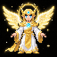
✨ AETHERION
✨ HABILIDADES RACIAIS
🌟 ESSÊNCIA CELESTIAL
• Resistência: Você possui resistência a dano radiante e necrótico.
• Intuição Elevada: Você possui vantagem em testes de Sabedoria (Intuição).
• Aprimoramento: Você ganha proficiência em um atributo adicional à sua escolha.
👁 VISÃO CELESTIAL
Você enxerga além do plano material.
Você possui visão no escuro até 18 metros. Além disso, você pode perceber criaturas invisíveis a até 3 metros de você.
💫 LUZ PRIMORDIAL
Você canaliza energia pura do Éter.
Ação Bônus. Você pode ativar este poder e escolher um dos efeitos:
• Você recupera 1d6 + seu bônus de proficiência pontos de vida
• OU obtém vantagem no próximo ataque, teste ou teste de resistência que realizar
O valor de cura aumenta conforme seu nível: 2d6 no nível 5, 3d6 no nível 11, e 4d6 no nível 17.
Usos. Igual ao seu bônus de proficiência.
✨ VARIANTES DO ÉTER
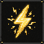
☀️ CENTELHA DO ÉTER
Sua energia permeia seus ataques.
Ao acertar um ataque físico, você pode fazer com que ele cause dano radiante adicional igual a metade do seu bônus de proficiência (arredondado para cima).
Este efeito dura 5 turnos.
Usos. Metade do seu bônus de proficiência.
💫 PODERES DO ÉTER (Escolha 2)
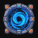
🌈 TELEPORTE PRISMÁTICO
Ação Bônus. Você se teleporta para um espaço desocupado a até 9 metros.
Criaturas a até 1,5 metro do ponto de chegada devem realizar um teste de resistência de Sabedoria.
Falha. A criatura sofre desvantagem em suas jogadas de ataque até o final do próximo turno.
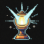
🔆 LUZ REVELADORA
Quando você acerta um ataque, o alvo deve realizar um teste de resistência de Constituição.
Falha. A criatura não pode se tornar invisível e ataques contra ela têm vantagem.
Duração: 2 turnos.
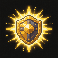
🛡 ÉGIDE RADIANTE
Reação. Quando uma criatura aliada a até 1,5 metro de você sofre dano, você pode reduzir esse dano em uma quantidade igual a:
1d10 + seu bônus de proficiência + seu nível
✨ INSPIRAÇÃO ELEVADA
Ao acertar um ataque, você pode conceder a um aliado um bônus de 1d4 em jogadas de ataque e testes de resistência.
Duração: 2 turnos.
🌠 OLHAR DO ÉTER
Ação. Uma criatura deve realizar um teste de resistência de Sabedoria.
Falha. A criatura sofre desvantagem em jogadas de ataque por 2 turnos.
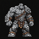
🪨 MEGALION
🔄 FORMA COLOSSAL (Ação Bônus)
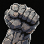
🔄 MANIFESTAÇÃO GIGANTE
Você manifesta o verdadeiro poder dos gigantes.
Ação Bônus. Você assume uma forma ampliada.
Duração: 10 minutos.
Durante esse tempo:
• Você é considerado como uma criatura de uma categoria de tamanho maior
• Seu alcance corpo a corpo aumenta em 1,5 metro
• Seu deslocamento aumenta em 3 metros
• Você possui vantagem em testes de Força
Usos. Igual ao seu bônus de proficiência.
🧬 CARACTERÍSTICAS COLOSSAIS (Escolha 1)
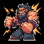
🧬 ATAQUES COLOSSAIS
Enquanto estiver sob efeito da Forma Colossal:
• Seus ataques causam +1d4 de dano físico adicional, exceto com armas leves
• O dano de suas armas aumenta em uma categoria, seguindo progressão semelhante à do monge, até o máximo de d10.
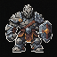
🛡 PELE DE COLOSSO
Seu corpo resiste a impactos massivos.
Você reduz o dano recebido em uma quantidade igual ao seu bônus de proficiência.
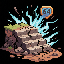
🌍 PASSOS TREMORES
Você impacta o solo com força destrutiva.
Ação Bônus. Uma criatura à sua escolha deve realizar um teste de resistência de Destreza.
CD do Teste. 8 + seu bônus de proficiência + seu modificador de Força.
Falha. A criatura fica Caída.
Usos. Igual ao seu bônus de proficiência.
⛰ DECADÊNCIA DO GIGANTE (Escolha 1)
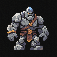
🪨 GIGANTE DA PEDRA
• Você possui vantagem em testes e resistências contra ser derrubado ou empurrado
• Você ignora terreno difícil
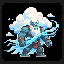
☁️ GIGANTE DAS NUVENS
Criaturas inimigas a até 1,5 metro de você:
• Têm seu deslocamento reduzido pela metade
• Não podem usar a ação Desengajar
• Sempre provocam ataques de oportunidade ao sair do seu alcance
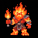
🔥 GIGANTE DO FOGO
• Quando uma criatura atinge você com um ataque corpo a corpo, ela sofre dano de fogo igual à metade do seu bônus de proficiência (arredondado para cima)
• Seus ataques corpo a corpo causam +1 de dano de fogo adicional
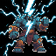
🌩 GIGANTE DA TEMPESTADE
• Uma vez por turno, ao acertar um ataque, você causa dano elétrico adicional igual à metade do seu bônus de proficiência (arredondado para cima)
• Você possui resistência contra efeitos que exigem testes de resistência para evitar a condição Atordoado
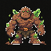
⛰ GIGANTE DA COLINA
• Você ignora as propriedades Pesada e Duas Mãos de armas
• Possui vantagem em testes de Força (Atletismo)
• É considerado como uma criatura de tamanho maior para efeitos de empurrar e agarrar